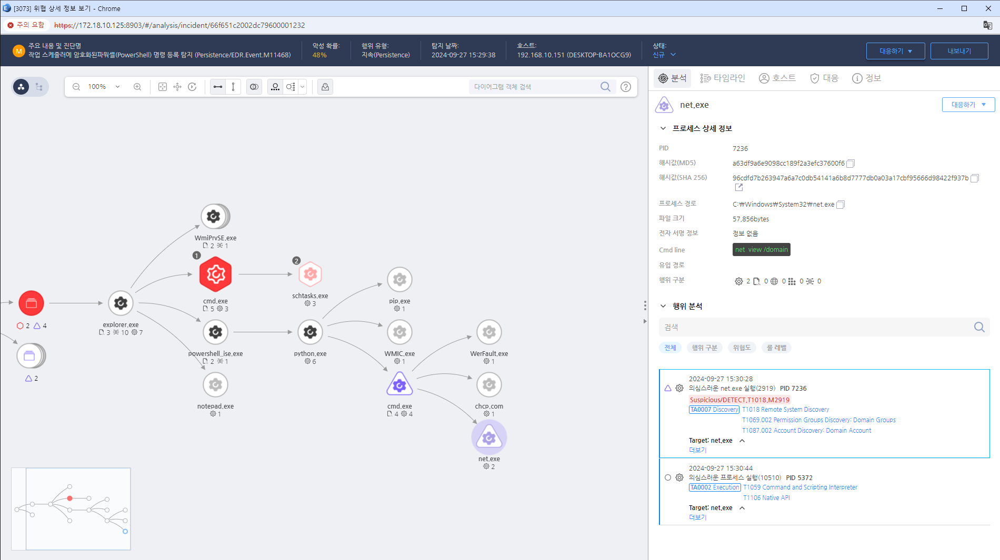

MITRE ATT&CK 액션을 기준으로 대응 방안을 작성
Action = "ProcessCreate" AND TargetProcess = "net.exe" AND Cmdline = "view" AND Cmdline = "/domain"
 https://172.18.10.125:8903/#/analysis/incident/66f651c2002dc79600001232
IDS/IPS를 사용하여 네트워크 스캔 활동을 실시간으로 탐지하고 알림을 설정합니다.
네트워크 장비와 서버의 로그를 분석하여 비정상적인 접근 시도를 식별하고 대응합니다.
의심스러운 스캔이 발견된 시스템을 즉시 격리하여 추가적인 공격을 방지합니다.
스캔 활동에 대한 사고 대응 프로세스를 실행하여 피해를 최소화합니다.
의심스러운 IP 주소에서의 트래픽을 즉시 차단하여 공격을 방어합니다.
발견된 취약점에 대한 보안 패치를 신속하게 적용하여 추가 공격을 방지합니다.
공격의 세부 사항을 문서화하여 향후 분석 및 대응 개선에 활용합니다.
필요하지 않은 포트를 차단하고, 특정 IP 주소나 서브넷에서의 접근을 제한합니다.
네트워크를 여러 구역으로 나누어 공격자가 한 영역에서 다른 영역으로 쉽게 이동할 수 없도록 합니다.
필요한 서비스만 운영하고, 불필요한 서비스는 비활성화하여 공격 표면을 줄입니다.
네트워크 및 시스템을 정기적으로 점검하여 취약점을 식별하고 해결합니다.
네트워크 트래픽을 모니터링하고 의심스러운 스캔 활동을 탐지하여 경고합니다.
모든 네트워크 활동을 기록하고 정기적으로 모니터링하여 이상 징후를 조기에 발견합니다.
기본 포트를 변경하여 스캐너가 쉽게 식별하지 못하도록 합니다.
명확한 보안 정책을 수립하고, 이를 직원들에게 교육하여 인식을 높입니다.
Action 실행시 함꼐 영향을 받는 다른 Techniqes
| ATT&CK |
|---|
| T1016.001 |
| T1059.001 |
| D3FEND |
|---|
| D3-NTSA |
| D3-LLM |
| D3-PLM |
| D3-NTPM |